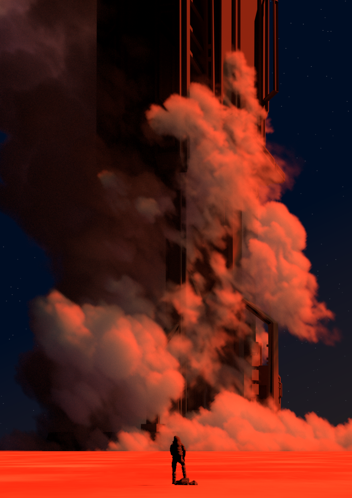

Extended a minimal educational ray tracer into a full physically based renderer.
- Acceleration
- Binned-SAH BVH with optimized traversal and multithreaded construction.
- Shading
- Diffuse, dielectric, and microfacet BSDFs; textured materials and HDR environment lighting.
- Light transport
- Path tracing with next-event estimation, multiple importance sampling (MIS), and Russian roulette.
- Volumes
- Heterogeneous participating media, delta tracking, HG/DHG phase functions, volumetric path tracing.